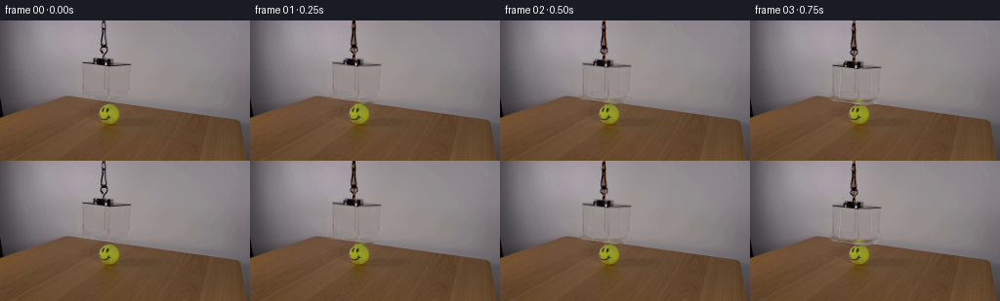
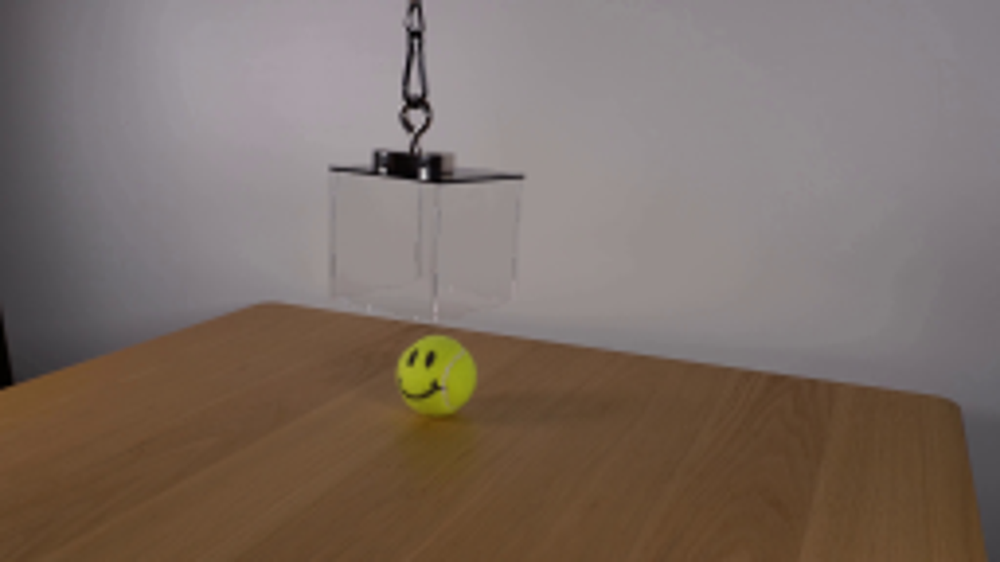
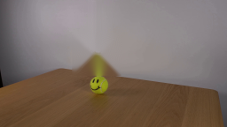

CODING AGENTS AS PIXEL WORLD MODELS
traex/GPT-5.6-Sol · 0099
点击播放 · 原生 RGB 像素
逐轮保存的候选
回放视频、检查图与代码变化。
每份候选均可单独播放。实际图片检查记录在下方工具轨迹中。
候选 01播放与检查图
点击播放 · 原生 RGB 像素

展开代码变化
--- 上一保存版本
+++ 本次保存版本
@@ -0,0 +1,176 @@
+from pathlib import Path
+
+import cv2
+import numpy as np
+from PIL import Image
+
+import artifact_io
+
+
+ROOT = Path(__file__).resolve().parent
+H, W = 144, 256
+
+
+def smoothstep(x):
+ x = np.clip(x, 0.0, 1.0)
+ return x * x * (3.0 - 2.0 * x)
+
+
+def make_masks():
+ """Masks for the photographed suspension and clear acrylic box."""
+ rig = np.zeros((H, W), np.uint8)
+
+ # Visible chain, swivel, hook, and the small black mounting puck.
+ cv2.line(rig, (106, 0), (106, 29), 255, 7, cv2.LINE_AA)
+ cv2.ellipse(rig, (106, 17), (5, 12), 0, 0, 360, 255, 3, cv2.LINE_AA)
+ cv2.ellipse(rig, (106, 31), (7, 8), 0, 0, 360, 255, 4, cv2.LINE_AA)
+ cv2.rectangle(rig, (97, 35), (119, 45), 255, -1)
+
+ # The top plate and the photographed acrylic edges. Narrow masks retain
+ # the naturally translucent faces rather than moving a rectangular crop.
+ cv2.line(rig, (84, 42), (134, 44), 255, 3, cv2.LINE_AA)
+ cv2.line(rig, (86, 44), (85, 79), 255, 3, cv2.LINE_AA)
+ cv2.line(rig, (131, 45), (131, 79), 255, 3, cv2.LINE_AA)
+ cv2.line(rig, (108, 45), (109, 82), 255, 3, cv2.LINE_AA)
+ cv2.line(rig, (85, 79), (109, 82), 255, 3, cv2.LINE_AA)
+ cv2.line(rig, (109, 82), (131, 79), 255, 3, cv2.LINE_AA)
+
+ # A little breadth around the nearly invisible lower rear edges.
+ cv2.line(rig, (88, 76), (88, 81), 255, 2, cv2.LINE_AA)
+ cv2.line(rig, (128, 76), (128, 81), 255, 2, cv2.LINE_AA)
+
+ # Inpainting gets a hard, slightly expanded mask; compositing uses the
+ # undilated mask so no block-shaped wall patch travels with the box.
+ hard = cv2.dilate((rig > 20).astype(np.uint8) * 255,
+ np.ones((3, 3), np.uint8), iterations=1)
+ return rig.astype(np.float32) / 255.0, hard
+
+
+def line_aa(canvas, p0, p1, color, alpha=1.0, width=1):
+ """Antialiased translucent line drawn in RGB space."""
+ overlay = canvas.copy()
+ cv2.line(overlay, p0, p1, color, width, cv2.LINE_AA)
+ return canvas * (1.0 - alpha) + overlay * alpha
+
+
+def acrylic_optics(frame, dy, amount):
+ """Subtle clear-plastic face tint, reflections, and lower edge."""
+ if amount <= 0:
+ return frame
+
+ out = frame.copy()
+ yy = float(dy)
+ # Four corners of the clear front/side volume, following photographed
+ # perspective. This is deliberately very transparent.
+ poly = np.array([[86, 44 + yy], [131, 45 + yy],
+ [131, 79 + yy], [109, 82 + yy], [85, 79 + yy]],
+ np.float32)
+ poly_i = np.round(poly).astype(np.int32)
+ face = np.zeros((H, W), np.uint8)
+ cv2.fillPoly(face, [poly_i], 255, cv2.LINE_AA)
+ face = cv2.GaussianBlur(face, (3, 3), 0.55).astype(np.float32) / 255.0
+
+ # Cool, almost neutral transmission through clear acrylic. The very low
+ # opacity lets the smiley remain plainly visible when enclosed.
+ a = face[..., None] * (0.018 * amount)
+ clear_tint = np.array([205.0, 218.0, 221.0], np.float32)
+ out = out * (1.0 - a) + clear_tint * a
+
+ # Slim reflected room-light streaks; their weakness is important for a
+ # realistic transparent box at this resolution.
+ x_left = int(round(92 + 0.04 * yy))
+ x_right = int(round(124 - 0.03 * yy))
+ y0, y1 = int(round(48 + yy)), int(round(77 + yy))
+ out = line_aa(out, (x_left, y0), (x_left - 1, y1),
+ (226, 228, 226), 0.16 * amount, 1)
+ out = line_aa(out, (x_right, y0 + 2), (x_right, y1 - 2),
+ (218, 223, 223), 0.10 * amount, 1)
+
+ # Reassert the transparent lower seams. They become the primary visual
+ # evidence that the walls surround rather than strike the ball.
+ out = line_aa(out, tuple(np.round(poly[4]).astype(int)),
+ tuple(np.round(poly[3]).astype(int)),
+ (169, 172, 169), 0.22 * amount, 1)
+ out = line_aa(out, tuple(np.round(poly[3]).astype(int)),
+ tuple(np.round(poly[2]).astype(int)),
+ (177, 179, 176), 0.20 * amount, 1)
+ return out
+
+
+def contact_shadow(frame, dy):
+ """A restrained table-contact shadow during the final part of lowering."""
+ bottom = 81.0 + dy
+ strength = smoothstep((bottom - 101.0) / 7.5)
+ if strength <= 0:
+ return frame
+ shadow = np.zeros((H, W), np.float32)
+ center = (109, int(round(bottom + 1.2)))
+ cv2.ellipse(shadow, center, (26, 3), 2, 0, 360, 1.0, -1, cv2.LINE_AA)
+ shadow = cv2.GaussianBlur(shadow, (11, 5), 2.2)
+ # Avoid putting the artificial contact shadow on the wall.
+ table_gate = np.zeros((H, W), np.float32)
+ table_poly = np.array([[0, 98], [67, 77], [244, 101], [255, 144], [0, 144]], np.int32)
+ cv2.fillPoly(table_gate, [table_poly], 1.0)
+ a = (shadow * table_gate * (0.18 * strength))[..., None]
+ return frame * (1.0 - a) + np.array([45.0, 34.0, 24.0]) * a
+
+
+def main():
+ source = np.asarray(Image.open(ROOT / "first_frame.png").convert("RGB"),
+ dtype=np.uint8)
+ assert source.shape == (H, W, 3)
+ soft_mask, hard_mask = make_masks()
+
+ # Remove only the photographed rig. OpenCV inpainting reconstructs the
+ # smooth wall/table underneath from immediately adjacent source pixels.
+ clean_bgr = cv2.inpaint(cv2.cvtColor(source, cv2.COLOR_RGB2BGR),
+ hard_mask, 4, cv2.INPAINT_TELEA)
+ clean = cv2.cvtColor(clean_bgr, cv2.COLOR_BGR2RGB).astype(np.float32)
+
+ # Difference compositing preserves transparency: shifted acrylic edges
+ # modify whatever lies behind them (wall, table, or tennis ball), rather
+ # than carrying an opaque patch of the original wall downward.
+ delta = source.astype(np.float32) - clean
+ delta *= soft_mask[..., None]
+
+ frames = [source.copy()]
+ for i in range(1, 20):
+ # Lower over 3.75 seconds, ease gently into contact, then hold. A
+ # fractional-pixel trajectory avoids jerky 4-fps one-pixel stepping.
+ u = min(i / 15.0, 1.0)
+ dy = 28.0 * smoothstep(u)
+
+ frame = clean.copy()
+
+ # Soft shadow is behind both box and ball/clear face details.
+ frame = contact_shadow(frame, dy)
+
+ # The upper suspension feeds into frame as the assembly descends.
+ # Muted burnt orange reads as cord while retaining the original dark
+ # metal/cord texture shifted on top of it.
+ cord_end = int(round(37 + dy))
+ cord_layer = frame.copy()
+ cv2.line(cord_layer, (106, -2), (106, cord_end),
+ (116, 65, 27), 2, cv2.LINE_AA)
+ cv2.line(cord_layer, (107, -2), (107, cord_end),
+ (57, 43, 34), 1, cv2.LINE_AA)
+ frame = frame * 0.28 + cord_layer * 0.72
+
+ mat = np.array([[1.0, 0.0, 0.0], [0.0, 1.0, dy]], np.float32)
+ moved_delta = cv2.warpAffine(delta, mat, (W, H),
+ flags=cv2.INTER_LINEAR,
+ borderMode=cv2.BORDER_CONSTANT,
+ borderValue=0)
+ frame = np.clip(frame + moved_delta, 0, 255)
+
+ # Clear planes are composited last, in front of the stationary smiley.
+ frame = acrylic_optics(frame, dy, smoothstep(min(i / 4.0, 1.0)))
+ frames.append(np.clip(np.rint(frame), 0, 255).astype(np.uint8))
+
+ frames = np.stack(frames, axis=0)
+ assert np.array_equal(frames[0], source)
+ artifact_io.save(frames, ROOT)
+
+
+if __name__ == "__main__":
+ main()
候选 02播放与检查图
点击播放 · 原生 RGB 像素


展开代码变化
--- 上一保存版本
+++ 本次保存版本
@@ -44,6 +44,33 @@
hard = cv2.dilate((rig > 20).astype(np.uint8) * 255,
np.ones((3, 3), np.uint8), iterations=1)
return rig.astype(np.float32) / 255.0, hard
+
+
+def erase_to_wall(image):
+ """Reconstruct the wall hidden by the original high-mounted apparatus.
+
+ The whole original box is in front of the wall (its lowest seam is just
+ above the tabletop). Row-wise interpolation is more faithful here than
+ broad generic inpainting, which can pull the brown table upward.
+ """
+ out = image.astype(np.float32).copy()
+
+ def strip(x0, x1, y0, y1, feather=4):
+ for y in range(y0, y1 + 1):
+ left = image[y, x0 - feather].astype(np.float32)
+ right = image[y, x1 + feather].astype(np.float32)
+ for x in range(x0 - feather + 1, x1 + feather):
+ t = (x - (x0 - feather)) / float(x1 - x0 + 2 * feather)
+ value = left * (1.0 - t) + right * t
+ # Cosine feather at the two joins.
+ edge = min(1.0, (x - (x0 - feather)) / feather,
+ ((x1 + feather) - x) / feather)
+ edge = smoothstep(edge)
+ out[y, x] = out[y, x] * (1.0 - edge) + value * edge
+
+ strip(97, 116, 0, 37, 5) # chain and swivel
+ strip(81, 136, 35, 83, 5) # puck, plate, and clear box
+ return out
def line_aa(canvas, p0, p1, color, alpha=1.0, width=1):
@@ -121,11 +148,7 @@
assert source.shape == (H, W, 3)
soft_mask, hard_mask = make_masks()
- # Remove only the photographed rig. OpenCV inpainting reconstructs the
- # smooth wall/table underneath from immediately adjacent source pixels.
- clean_bgr = cv2.inpaint(cv2.cvtColor(source, cv2.COLOR_RGB2BGR),
- hard_mask, 4, cv2.INPAINT_TELEA)
- clean = cv2.cvtColor(clean_bgr, cv2.COLOR_BGR2RGB).astype(np.float32)
+ clean = erase_to_wall(source)
# Difference compositing preserves transparency: shifted acrylic edges
# modify whatever lies behind them (wall, table, or tennis ball), rather
候选 04播放与检查图
可观测工具轨迹
实际执行的命令与返回图片。
命令 1exit 0
/bin/bash -lc "cat prompt.txt && printf '\\n--- GENERATION_RULES ---\\n' && cat GENERATION_RULES.md"
命令 2exit 1
/bin/bash -lc "find . -maxdepth 2 -type f -printf '%p\\n' | sort && printf '\\n--- tools ---\\n' && command -v ffmpeg && command -v python3 && python3 - <<'PY'
try:
import cv2; print('cv2', cv2.__version__)
except Exception as e: print('no cv2',e)
try:
from PIL import Image; print('PIL ok')
except Exception as e: print('no PIL',e)
PY"命令 3exit 0
/bin/bash -lc "python3 - <<'PY' mods=['PIL','cv2','numpy','scipy','imageio'] for m in mods: try: x=__import__(m); print(m, getattr(x,'__version__','ok')) except Exception as e: print(m,'ERR',e) PY printf '\\ncommands\\n'; for c in ffmpeg convert magick; do command -v \""'$c" || true; done printf '"'\\nartifact_io\\n'; sed -n '1,240p' artifact_io.py"
命令 4exit 0
/bin/bash -lc "python3 - <<'PY'
from PIL import Image
im=Image.open('first_frame.png')
print(im.mode,im.size)
im.resize((1024,576)).save('.tmp/upscaled.png')
PY"命令 5exit 0
/bin/bash -lc "python3 generate.py && python3 - <<'PY'
from pathlib import Path
import numpy as np
from PIL import Image
z=np.load('pixels.npz')['pixels']
print('pixels',z.shape,z.dtype)
a=np.array(Image.open('first_frame.png'))
b=np.array(Image.open('frames/00.png'))
print('frame0 exact',np.array_equal(a,b),'maxdiff',np.abs(a.astype(int)-b.astype(int)).max())
print('outputs',[(p.name,p.stat().st_size) for p in map(Path,['pixels.npz','inspection.png','transition_check.png','index.html'])])
PY"命令 6exit 0
/bin/bash -lc "python3 - <<'PY'
import cv2,numpy as np
from PIL import Image
im=np.array(Image.open('first_frame.png'))
for rad in [3,5,8]:
m=np.zeros((144,256),np.uint8)
cv2.rectangle(m,(81,37),(136,85),255,-1)
cv2.rectangle(m,(99,0),(114,38),255,-1)
out=cv2.cvtColor(cv2.inpaint(cv2.cvtColor(im,cv2.COLOR_RGB2BGR),m,rad,cv2.INPAINT_TELEA),cv2.COLOR_BGR2RGB)
Image.fromarray(out).save(f'.tmp/clean{rad}.png')
# ns
out=cv2.cvtColor(cv2.inpaint(cv2.cvtColor(im,cv2.COLOR_RGB2BGR),m,5,cv2.INPAINT_NS),cv2.COLOR_BGR2RGB)
Image.fromarray(out).save('.tmp/cleanns.png')
PY"命令 7exit 0
/bin/bash -lc "python3 generate.py && python3 - <<'PY'
import numpy as np
from PIL import Image
src=np.asarray(Image.open('first_frame.png').convert('RGB'))
frames=np.stack([np.asarray(Image.open(f'frames/{i:02d}.png')) for i in range(20)])
print('shape/dtype',frames.shape,frames.dtype)
print('frame00 exact',np.array_equal(frames[0],src))
print('changed pixels by frame',[int(np.any(frames[i]"'!=frames[i-1],axis=2).sum()) for i in range(1,20)])
print('"'RGB ranges',frames.min(),frames.max())
PY"命令 8exit 0
/bin/bash -lc "python3 - <<'PY'
from PIL import Image
import numpy as np
ims=[]
for i in [0,1,4,8,12,15,19]:
im=Image.open(f'frames/{i:02}.png').resize((768,432),Image.Resampling.NEAREST)
im.save(f'.tmp/f{i:02}.png')
PY"命令 9exit 0
/bin/bash -lc 'python3 -m py_compile generate.py && git status --short 2>/dev/null || true && du -sh frames pixels.npz index.html inspection.png transition_check.png'
视觉工具实际返回图片 1

视觉工具实际返回图片 2

视觉工具实际返回图片 3

视觉工具实际返回图片 4

视觉工具实际返回图片 5

保存候选 4 份；完成命令 9 次；可验证图片返回 5 张。原始 API 响应与完整日志保留在本地。